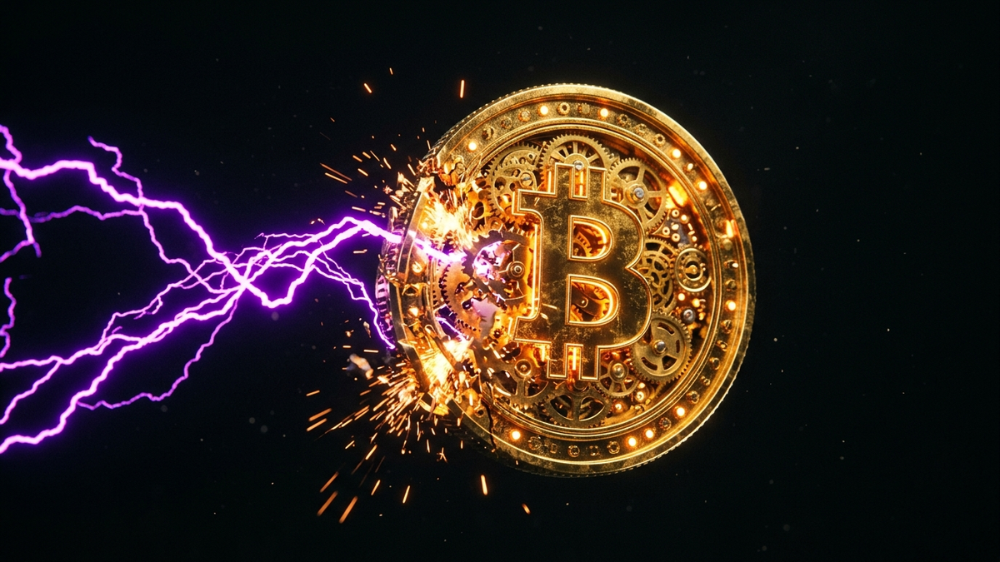

Alright, let's cut the crap. You've seen the headlines, probably some clickbait YouTube video with a guy making a shocked face in the thumbnail. "Quantum Computers Will KILL Bitcoin!" It's the boogeyman that gets trotted out every six months to scare people. As someone who has spent 15 years in the trenches of cybersecurity, I'm here to give you the ground truth, not the hype. We're going to pull this threat apart, piece by piece, and see what's real, what's science fiction, and what you, a Bitcoin holder, actually need to do about it.
The core question is simple: Can a new kind of supercomputer crack the code that protects your crypto and drain your wallet? The answer is yes, theoretically. But the devil is in the details. The "when" and "how" are what matter. Forget the abstract fear and let's talk about the specific vulnerabilities, the real-world timelines, and the concrete battle plan that's already being drawn up. This isn't a doomsday prophecy; it's a technical challenge. And in tech, every challenge has a solution. Let's get into it.
First, let's get one thing straight. A quantum computer is not just a "faster" version of the laptop you're using. That's like saying a fighter jet is a "faster" bicycle. They operate on a completely different set of principles. Your computer uses bits, which are like light switches—they can either be ON (1) or OFF (0). It's a binary, black-and-white world. A quantum computer uses "qubits," which are more like spinning coins. While it's spinning, that coin is in a state of "superposition"—it's both heads and tails at the same time. It's only when you stop it (measure it) that it lands on one or the other.
This ability to exist in multiple states at once is what gives a quantum computer its horsepower. Imagine trying to find your way out of a massive maze. Your regular computer would try one path, hit a dead end, go back, and try another. It does this incredibly fast, but it's still a one-at-a-time process. A quantum computer, thanks to superposition, can essentially explore every single path in the maze simultaneously. This makes it insanely good at solving very specific types of problems—problems that involve finding one correct answer out of a gazillion possibilities.
So why should you, a crypto holder, care? Because modern cryptography is built on one of these "massive maze" problems. Specifically, it's built on the idea that it's easy to multiply two huge prime numbers together, but it's practically impossible for a regular computer to take that resulting giant number and figure out the two original primes. This is the foundation of the lock (the public key) that protects your Bitcoin. A quantum computer, running a specific program called Shor's Algorithm, is designed to solve exactly this kind of problem. It's not a battering ram; it's a skeleton key that can pick the very lock that keeps your digital assets safe.
When people scream about quantum attacks, they often get the details wrong. They imagine a quantum computer just brute-forcing a Bitcoin private key out of thin air. That's not how it works. The threat is surgical and exploits a very specific part of how a Bitcoin transaction is processed. Bitcoin has two main cryptographic components: the hashing algorithm (SHA-256) and the digital signature algorithm (ECDSA). The real, immediate threat is to ECDSA.
Here's the breakdown. Your Bitcoin wallet is controlled by a private key. From this private key, a public key is derived. Think of the public key as your bank account number, which you can share. Your private key is like your PIN, which you never, ever share. The vulnerability lies in the mathematical relationship between the two. With ECDSA, it’s currently impossible for a classical computer to reverse-engineer your private key from your public key. But for a powerful quantum computer running Shor's Algorithm, it's a solvable math problem.
However, there's a catch. Your public key is NOT broadcast to the entire network until you actually spend Bitcoin from that address. When you send a transaction, you sign it with your private key, and this transaction includes your public key to prove you're the owner. This creates a critical, but very short, attack window. A quantum attacker would have to: 1) see your transaction broadcast to the network (in the mempool), 2) extract your public key from it, 3) use their quantum computer to derive your private key, and 4) create and broadcast a new, fraudulent transaction spending your remaining funds with a higher fee, all before your original transaction gets confirmed in a block (which takes about 10 minutes). This is a high-stakes race against time.
What about the other part, SHA-256? This is what's used in Bitcoin mining. A different quantum program, Grover's Algorithm, could speed this up. But it doesn't "break" it. It offers a quadratic speedup, not an exponential one like Shor's. This means it might make mining faster, centralizing power for those with quantum computers, but it doesn't directly threaten the funds in your wallet. The real danger, the one that could drain your account, is the ECDSA signature scheme.
💡 Expert IT Tip: The single most effective defense you can use *today* is to never reuse Bitcoin addresses. When you receive Bitcoin, it's in an address whose public key is unknown to the network. The moment you spend from it, the public key is revealed. If you move all the funds out and never use that address again, you effectively close the quantum attack window for those funds forever. Good hardware wallets do this automatically.
This is the million-dollar question. Are we going to see quantum hackers draining wallets in the next couple of years? Let me be blunt: No. The 2026 timeline is pure hype, driven by misunderstanding the difference between a laboratory curiosity and a functional, crypto-breaking machine. Building a quantum computer is one thing; building one stable and powerful enough to break 256-bit elliptic curve cryptography is another beast entirely. It’s the difference between building a go-kart and building a spaceship.
The key metric isn't just the number of qubits. You'll see companies like Google and IBM announcing machines with hundreds or even a thousand "physical qubits." But these are noisy, unstable, and prone to errors. They're like trying to do complex math in the middle of a hurricane. To run an algorithm like Shor's effectively, you need "logical qubits," which are made up of many physical qubits working together with complex error-correction codes to produce one stable, reliable qubit. Estimates suggest that breaking Bitcoin's ECDSA would require a machine with thousands of logical qubits, which translates to potentially millions of high-quality physical qubits. We are nowhere near that today.
Think of it this way: the current state of quantum computing is like the 1950s of classical computing. We have these giant, room-sized machines that are incredibly expensive, require specialized teams to operate, and can perform very specific tasks for a few fractions of a second before losing their quantum state ("decoherence"). They are monumental scientific achievements, but they are not yet practical engineering tools for hacking. Experts in the field, including those at NIST (the U.S. National Institute of Standards and Technology), generally project that a cryptographically relevant quantum computer (CRQC) is more than a decade away. While breakthroughs can happen, the fundamental physics and engineering challenges of error correction and qubit stability are massive hurdles that won't be solved overnight.
So, is the threat fake? Absolutely not. The threat is real, but the timeline is extended. The reason we're talking about it now is that cryptographic standards take years to develop, test, and deploy. You don't wait until the enemy is at the gate to start building your fortress. The transition to quantum-resistant cryptography needs to start now to be ready for the day, perhaps in the 2030s, when the threat becomes practical.
The cybersecurity community isn't sitting on its hands waiting for the "quantum apocalypse." The defense strategy is well underway, and it's called Post-Quantum Cryptography (PQC) or Quantum-Resistant Algorithms (QRAs). The concept is simple: if quantum computers are a specialized skeleton key for our current locks, then we need to invent entirely new types of locks that the key doesn't fit. These new locks aren't based on the prime factorization problem that Shor's algorithm so easily solves.
Protect your identity and browse privately with Surfshark One - the all-in-one security suite.
GET 60% OFF SURFSHARK NOWInstead, cryptographers are building QRAs based on different, much harder mathematical problems that are believed to be difficult for both classical and quantum computers to solve. There are several promising categories. One is lattice-based cryptography, which involves finding a specific point in a complex, multi-dimensional grid (a lattice). Imagine trying to find one specific grain of sand in a 100-story building filled with sand—that’s the kind of difficulty we're talking about. Another is hash-based cryptography, which uses the properties of cryptographic hash functions (like SHA-256) to build signatures. These are very well-understood and considered highly secure, but can have larger signature sizes.
The good news is that this isn't just theoretical work. NIST has been running a multi-year competition to standardize the best PQC algorithms. In 2022, they announced the first winners, selecting algorithms like CRYSTALS-Kyber (for key exchange) and CRYSTALS-Dilithium (for digital signatures) as primary standards. These are the algorithms that will form the backbone of future secure communications, from websites and banking to, yes, cryptocurrencies. The heavy lifting of inventing and vetting these new cryptographic primitives is already being done by the world's top cryptographers.
The challenge for Bitcoin and other cryptocurrencies isn't inventing the new math; it's implementing it. It will require a network-wide upgrade to change the fundamental signature scheme from ECDSA to something like CRYSTALS-Dilithium. This is a massive undertaking for a decentralized system, but it's an engineering and coordination problem, not an unsolved scientific one. The tools for our defense are already being forged and tested.
💡 Expert IT Tip: Want to see the future of encryption? Don't just read articles. Go to the source. The official NIST Post-Quantum Cryptography project page (csrc.nist.gov/Projects/post-quantum-cryptography) is the definitive resource. You can see the selected algorithms, the research papers, and the official timelines. This is where the real work is happening, free from media hype.
Knowing that quantum-resistant algorithms exist is one thing. Actually plugging them into a live, decentralized, multi-billion-dollar network like Bitcoin is another. This is where technology meets politics and economics. The upgrade process is the real challenge, and it will require careful planning and community consensus to pull off without causing chaos.
There are two primary ways to upgrade the Bitcoin protocol: a soft fork or a hard fork. A hard fork is a radical change that is not backward-compatible. Think of it like releasing a new version of Microsoft Word that can't open old .doc files. Everyone on the network would be forced to upgrade, and those who don't would be split off onto a separate, legacy chain. This is messy, contentious, and can split the community, as we saw with the Bitcoin Cash fork. It's generally seen as the nuclear option and is avoided if possible.
A soft fork is a backward-compatible upgrade. It's like a new version of Word that can still open old files, but adds new features that only new versions can use. In the context of a quantum-resistance upgrade, this could mean creating a new type of Bitcoin address. You would have your old "legacy" addresses (starting with 1, 3, or bc1) and new "quantum-resistant" addresses (let's say they start with "qr1"). Old nodes on the network that haven't upgraded would still be able to validate transactions, but they wouldn't fully understand the new rules governing the qr1 addresses. This is a much safer, more gradual way to roll out a change.
The most likely transition path would involve users voluntarily moving their funds. You would create a new quantum-resistant wallet and then send a transaction from your old ECDSA-based address to your new QRA-based address. This one-time transaction would expose your old public key, but it would be the last time. Once your Bitcoin is sitting in the new QRA address, it would be protected by the new, stronger cryptography. The network could incentivize this over time, perhaps by making fees for legacy transactions more expensive. This allows for a migration over several years, giving everyone from exchanges to individual users ample time to upgrade their software and secure their funds before a CRQC ever becomes a reality.
Okay, enough theory. Let's talk about what you can do right now. While the doomsday clock for a quantum attack is not at one minute to midnight, good security hygiene is timeless. Adopting these habits today will not only protect you from current threats but will also make the future transition to a quantum-resistant Bitcoin seamless for you. Your goal is to minimize your attack surface, and that starts with how you handle your keys and addresses.
The number one, non-negotiable rule is: Do not reuse addresses. As we discussed, your public key is only exposed when you spend funds. If you receive 0.1 BTC into a fresh address and just hold it, the public key associated with that address is not on the blockchain. It's effectively hidden. The moment you spend even a tiny fraction of that 0.1 BTC, the public key is broadcast for the world to see. If you leave the remaining balance in that same address, that's the money that is theoretically vulnerable to a future quantum attack. By always sending the full remaining balance to a new, fresh address you control (a "change address"), you ensure that no funds are ever left sitting in an address with an exposed public key. This single habit mitigates the primary quantum threat vector.
Second, use a modern hardware wallet. Devices from Ledger, Trezor, or Coldcard automatically manage address generation and change addresses for you, making it easy to follow the "no reuse" rule. They also keep your private keys completely offline, protecting you from malware, phishing, and other common threats that are far more likely to steal your crypto today than a quantum computer. Your focus in 2024, 2025, and 2026 should be on mastering conventional digital security. Make sure your backup seed phrase is stored securely offline, never on a computer or in a cloud drive. Use a strong passphrase on your wallet. These basic steps provide a massive amount of protection against 99.9% of real-world threats.
Finally, stay informed from credible sources. Follow the work of Bitcoin Core developers, read the mailing lists, and listen to respected cryptographers. Ignore the sensationalist headlines and YouTube fear-mongers. The transition to PQC will be a long, public, and transparent process. By staying educated, you'll be able to distinguish between a genuine protocol development and baseless FUD (Fear, Uncertainty, and Doubt). Your best defense is knowledge and a calm, methodical approach to security.
So, is your Bitcoin safe in 2026? Yes, it is. The narrative of a quantum super-villain emerging overnight to drain every wallet is science fiction. The reality is a slow-motion arms race between quantum computer engineers and the world's cryptographers. Right now, the cryptographers are winning, and they have a significant head start. The solutions, in the form of quantum-resistant algorithms, are already here and are being standardized.
The real challenge isn't the math; it's the logistics of upgrading a global, decentralized network. But it's a solvable problem. The Bitcoin community has successfully navigated major upgrades before, and this will be the next great test. For you, the user, the path forward is clear: practice impeccable security hygiene today. Don't reuse addresses, use a hardware wallet, and protect your seed phrase as if it were your life savings—because it is. The quantum threat is a storm on the distant horizon, not the rain pouring down on you today. Keep your roof in good repair, and you'll be ready when the weather eventually turns.
Don't wait for the headlines. Our Private Telegram Channel delivers real-time AI security updates and digital wealth strategies before they go viral. Stay protected. Stay ahead.
⚡ JOIN THE 1% NOWNo sign-up required. Instantly check risks, analyze AI text, or calculate your digital finances.